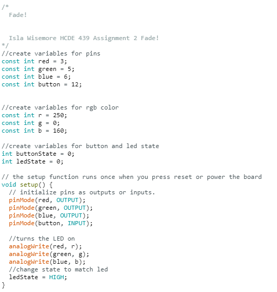

Isla's Assignment 2!

I picked 220 Ohm resistors for the LED because they work for all colors of LED,
and a 1k Ohm resistor for the switch because it only needs a small amount of current.

Red wires are used for analog outputs, blue are used for power, black is used for ground,
and white is used for the switch input.



Pushing the button fades the LED on or off.
Here is all the documentation for assignment 2!